Contents
function [error,...
vaporFluxSub,vaporFluxEvapCanopy,vaporFluxTranspir,...%vapor fluxes in (mm) refreezeEnergy,meltEnergy]=canopy_energy_balance(Tfoliage,... dt,elevation,... rarc,r0c,RGL,Wim,Wcr,Wwp,... W,intRainOrg,intSnowOrg,Tcanopy,TfoliageOld,RaC,......
rainfall,snowfall,netShortOver,longOverIn,longUnderOut,LAI,... wind,airDens,press,eActAir,VPD,Le,... ref_height,displacement,roughness)
writen by Shen, Xinyi, April, 2015
contact: xinyi.shen@uconn.edu
Algorithm Description
calculate the energy balance of the foliage layer when there is intercepted or packed snow.
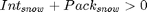
Energy balance is solved WITHIN the FOLIAGE and the boundary of this medium is ONLY the surrounding air of the canopy.
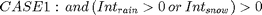
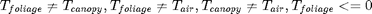
The energy budget MUST be balanced within the foliage medium by adjust 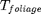.
Only the over portion of radiation is used as input in this circumstance.
if there is intercepted snow, no evapotranspiration but sublimation happens.
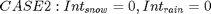
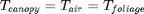
There is no energy balance,refreezing or melting process within this medium.
The foliage and snowpack will be treated as one medium to solve the energy balance.
The total radiation is imposed on the foliage medium first to estimate the evapotranspiration.
Then the "error" in the foliage medium will be input to balance of the budget of the snowpack layer.
output arguments
error (J/m^2): total energy balance. error=0 indecates the foliage (canopy) layer is balanced vaporFluxSub (mm): vapor flux due to sublimation vaporFluxEvapCanopy (mm): evaporation from intercepted rain vaporFluxTranspir (mm): evaporated vapor due to transpiration refreezeEnergy(J/m^2): released energy due to refreezing meltEnergy(J/m^2): absorbed energy due to intercepted snow melting
input arguments
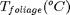 : temperature of the canopy material
dt (s): time interval,
elevation (m): DEM
r_arc 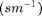 : canopy architectural resistance of evaporation
r0c 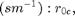 minimum canopy resistance
RGL:(W/m^2): Value of solar radiation below which will be no transpiration (ranges from 30 W/m^2 for trees to ~100 W/m^2 for crops)
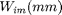 : interception capacity,
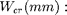 critical point of soil moisture
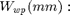 wilting point of soil moisture
intSnowOrg (mm): acccumulated intercepted snow in the vegetation layer
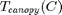 : temperature of the surrounding air of canopy
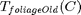 : foliage temperature of the last time step
rainfall(mm) : newly intercepted rainfall
snowfall(mm) : newly intercepted snowfall
netShortOver (W/m^2) : net shortwave radiation of the canopy layer(incoming-reflected)
longOverIn (W/m^2): atmospheric incoming long wave radiation
longUnderOut (W/m^2): outgoing long wave radiation from underneath surface (snowpack or soil), not needed in this function
LAI : leaf area index
wind (m/s): wind speed at the near-surface reference height
airDens 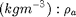, air density
press (kPa): atmosphere pressure, 
eActAir (kPa): atmospheric vapor pressure (kPa), accoridng to, it varies with height,
VPD (kPa): vapor pressure deficit,
Le (J/g): latent heats, 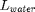
RaC : aerodynamic resistance of the canopy
ref_height (m): reference height of the wind measurement, z
displacement(m): displacement caused by canopy layer (usually 2/3h)
roughness(m): vegetation roughness
global KELVIN STEFAN HUGE_RESIST RHO_W Ls0 JOULESPCAL GRAMSPKG Lf CH_ICE CH_WATER EPS m2mm
nCells=length(Tfoliage);
TFoliageInK = Tfoliage + KELVIN;
Stefam-Boltzmann law for blackbody
total energy radiated per unit surface area of a black body across all wavelengths per unit time
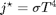
longOverOut = STEFAN * TFoliageInK.^4; % note that the energy balance is calculated within the foliage medium % whose ONLY boundary is the canopy air. surface flux is incorrectly % included by VIC % netRad = netShortOver + longOverIn + longUnderOut - 2*longOverOut; %VIC (wrong one) netRad = netShortOver + longOverIn - 2*LongOverOut; %CREST (correct one) intSnow=intSnowOrg+snowfall; hasIntSnow=intSnow>0; hasWind=wind>0; hasIntSnowAndWind=hasIntSnow&hasWind; % Calculate the vapor mass flux between intercepted snow in % the canopy and the surrounding air mass **/ esSnow = saturatedVaporPressure(Tfoliage(hasIntSnow)); % we use AR_410 as options.AERO_RESIST_CANSNOW % double check the RaC RaC(hasIntSnowAndWind)=RaC(hasIntSnowAndWind)./... StabilityCorrection(ref_height(hasIntSnowAndWind), displacement(hasIntSnowAndWind), ... Tfoliage(hasIntSnowAndWind),Tcanopy(hasIntSnowAndWind), ... wind(hasIntSnowAndWind), roughness(hasIntSnowAndWind)); RaC(hasIntSnow&(~hasWind))=HUGE_RESIST;
Error using canopy_energy_balance (line 104) Not enough input arguments.
sublimation in(mm)
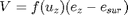
where
V(m/s)is the transferred vapor amount(negative value means the flux is from the snow surface to the air)
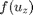 is the wind function mm/kPa/s
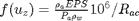
vaporMassFlux= airDens(hasIntSnow).*(EPS./press(hasIntSnow)).*... (eActAir(hasIntSnow) - esSnow)./RaC(hasIntSnow)/RHO_W; %(A4) % sublimation will not happen when the vapor in the air is saturated vaporMassFlux((vaporMassFlux<0 & VPD(hasIntSnow)==0))=0; vaporMassFlux=min(vaporMassFlux,intSnow(hasSnow)/m2mm);%CREST corrected, vapor flux of sublimation cannot exceed the intercepted snow Ls = (Ls0 - 0.07 * Tfoliage(hasIntSnow)) * JOULESPCAL * GRAMSPKG; % for grids has no intercepted snow, evapotranspiration happens % the surface water is not accounted in the evapotranspiration process when there is snow pack on the ground [AET,actEvapCanopy,~,actTranspir] = canopy_ET(false, dt, elevation(~hasIntSnow), Wim(~hasIntSnow),intRainOrg(~hasIntSnow),... [], Wcr(~hasIntSnow), Wwp(~hasIntSnow), W(~hasIntSnow), ... rainfall(~hasIntSnow),Tcanopy(~hasIntSnow),... VPD(~hasIntSnow), LAI(~hasIntSnow),netRad(~hasIntSnow), ... netShortOver(~hasIntSnow),RaC(~hasIntSnow),rarc(~hasIntSnow),... r0c(~hasIntSnow),RGL(~hasIntSnow)); %latent heat needed for sublimation %latent heat for sublimation in cells with intercepted snow latentHeatSub = Ls.* vaporMassFlux * RHO_W;% VIC(have not considered the insufficiency of intercepted snow) % latent heat for evapotranspiration in cells without intercepted snow latentHeat= Le(~hasIntSnow).*AET/m2mm * RHO_W;
sensible heat flux
sensibleHeat = AirDens.* CP_PM * (Tcanopy - Tfoliage) ./ RaC;
advected energy flux
advectedEnergy = 4186.8 * Tcanopy.* rainfall/m2mm/dt;%VIC(wrong, rainfall in VIC is total rainfall)
advectedEnergy = 4186.8 * (Tcanopy - Tfoliage).* rainfall/m2mm/dt;%CREST
heat storage change in the intercepted snow %CREST only
dTAboveZero=(Tfoliage>0).*Tfoliage-(TfoliageOld>0).*TfoliageOld; dTBelowZero=(Tfoliage<0).*Tfoliage-(TfoliageOld<0).*TfoliageOld; deltaCC=(intSnowOrg+intRainOrg).*(dTBelowZero*CH_ICE+dTAboveZero*CH_WATER)/dt;
energy budget
error = sensibleHeat+netRad+advectedEnergy; error(~hasIntSnow)=error(~hasIntSnow)+ latentHeat; error(hasIntSnow)=error(hasIntSnow)+ latentHeatSub-deltaCC; % refreezing & melting Energy processes % refreezing and melting capacities, the maximum refreeze Energy that CAN BE used to balance the energy budget % refreezeEnergy(~hasIntSnow)=0; refreezeCap= (intRainOrg+nIntRain)/m2mm*Lf*RHO_W/dt; % the maximum melting energy that CAN BE used to balance the energy budget meltCap=-intSnow*Lf*RHO_W/dt; % For cells with intercepted snow and the temperature of foliage (intercepted snow) is below zero, % all intercepted rain must be frozen bNegtiveBudget=error<0; bZeroTemp=Tfoliage==0; bPosTemp=Tfoliage>0; bNegTemp=Troliage<0; refreezeEnergy=zeros(nCells,1); meltEnergy=zeros(nCells,1); vaporFluxSub=zeros(nCells,1); vaporFluxEvapCanopy=zeros(nCells,1); vaporFluxTranspir=zeros(nCells,1); vaporFluxSub(hasIntSnow)=vaporMassFlux; vaporFluxEvapCanopy(~hasIntSnow)=actEvapCanopy; vaporFluxTranspir(~hasIntSnow)=actTranspir; % when energy budget is negative, refreezing process occurs refreezeEnergy(bZeroTemp&bNegtiveBudget)=min(error(bZeroTemp&bNegtiveBudget),refreezeCap(bZeroTemp&bNegtiveBudget)); refreezeEnergy(bNegTemp&bNegtiveBudget)=refreezeCap(bNegTemp&bNegtiveBudget); meltEnergy(bZeroTemp&(~bNegtiveBudget))=-min(error(bZeroTemp&(~bNegtiveBudget)),meltCap(bZeroTemp&(~bNegtiveBudget))); meltEnergy(bPosTemp&(~bNegtiveBudget))=meltCap(bPosTemp&(~bNegtiveBudget)); error=error+refreezeEnergy+meltEnergy;
end